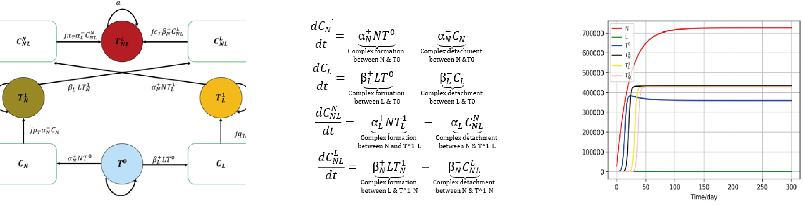

Model the Interaction between Cancer and Immune System
This work has a preprint. Here
Cancer is one of the most threatening diseases that human beings have not been able to completely overcome, and its occurrence and evolution in the body is a problem that people have been paying close attention to. However, the immune system could clear cancer cells before they cause harm to the body, with a function known as immune surveillance. Immune surveillance can inhibit tumor development, but some tumors can still develop under normal immune surveillance. It means that some tumor cells could escape during the interaction with immune cells and rapidly evolve to be immune to the attack by immune cells for a long time. Many studies have shown that tumor immune escape mechanism is the main obstacle affecting tumor treatment. (Yasumoto et al., 2009,Méndez et al., 2007 , Raval et al., 2014)
In the body, NK cells and CD8+ T cells can directly kill tumor cells. As an innate immune cell, NK cells can kill tumor cells by expressing Fas ligand (FasL), TNF-related apoptosis-inducing ligand (TRAIL), and secreting perforin. NK cells can also lyse tumor cells through antibody-dependent cytotoxicity (ADCC), which includes antibody binding to the FcγRIIIa receptor (CD16) on NK cells (Seidel et al., 2013, DiLillo and Ravetch, 2015). Activated CD8+ T cells (CTL) can kill tumor cells by means of interacting with death cell ligands or secreting perforin and granzyme. Considering the crucial functions of NK cells and CTL cells in tumor immune surveillance, we mainly focused on the functions of NK cells and CTL cells in the process of build this model.
According to relevant studies, tumor cells that survive the interaction with immune cells will undergo certain changes, such as down-regulation of pro-apoptotic receptors and up-regulation of anti-apoptotic receptors (Igney and Krammer, 2002, Classen et al. , 2012), and the evolution of cells occurs in this process. The evolutionary outcome depends on the type of immune cells that interact with the tumor cells. If the tumor cell can survive after interacting with both NK cells and CTL cells, it will acquire complete or maximal resistance to such immune cells (Al-Tameemi et al., 2012). Therefore, tumor cells will change dynamically with the interaction with immune cells.
So we use a group of differential equations to demonstrate the fluctuations of the tumor cells and the immune cells. More details please refer to the preprint.